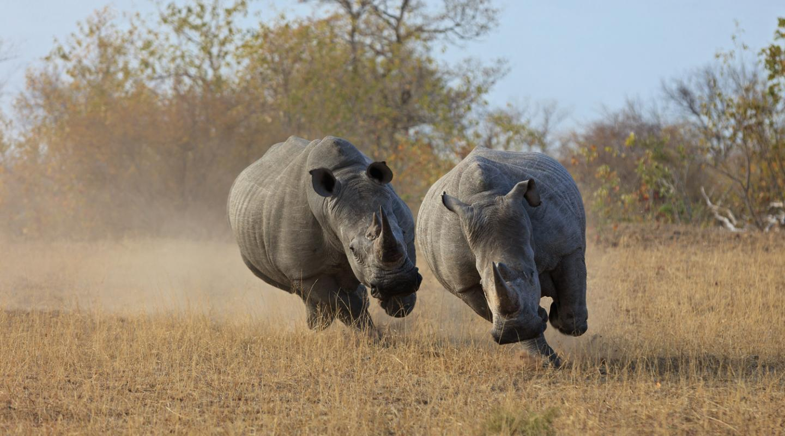

Northern White Rhinoceroses


Although officially listed as Critically Endangered, the northern white rhino is almost certainly extinct in the wild.
2006
Year of the last sighting of wild northern white rhinos.
Two
of these animals remain, both under close watch at Ol Pejeta Conservancy.
Diet
All rhinoceroses are herbivores, which means they eat plants. This species eats grass, and does not typically eat leaves or other plant products. They prefer eating shorter grasses and fresh growth. Because white rhinos are one of the largest grass-eating animals, they have to eat a lot of grass to survive. A single rhino eats up to 120 lbs. of grass per day!
Facts about Rhinos
THERE ARE 5 SPECIES OF RHINO...
...two African – black and white rhinos – and three Asian – greater one-horned, Sumatran and Javan rhinos. Three of these (black, Sumatran and Javan) are listed as ‘critically endangered’ by IUCN – there are thought to be fewer than 70 Javan and 100 Sumatran rhinos left in the wild, meaning their populations are truly under threat of extinction.
THEY’RE HUGE
Sumatran rhinos are the smallest, but they can still weigh 600kg (that’s almost 95 stone). And white rhinos are the largest, weighing up to 3,500kg (over 550 stone, or well over 3 tonnes!).
This is mighty impressive considering they mainly eat grass and leaves.BLACK AND WHITE RHINOS ARE BOTH, IN FACT, GREY
The names of black and white rhinos are misleading – as both are actually grey. The white rhino is said to have gotten its name from the Afrikaans word for wide (‘wyd’), referring to its wide, square lip (in contrast, black rhinos have a pointy upper lip). Early English explorers mistook this word for ‘white’ and consequently named this species ‘white’ rhino, and the other ‘black’ rhino to differentiate.
THEY’RE CALLED BULLS AND COWS
Male rhinos are called 'bulls' and females are called 'cows'. Their young are ‘calves’. Females tend to be more sociable than the more solitary, territorial males.
Together, a group of rhinos is called a ‘crash’.THEIR HORN IS MADE FROM THE SAME STUFF AS OUR FINGERNAILS
Rhino horn is made up of keratin - the same protein which forms the basis of our hair and nails. Javan and greater one-horned rhinos only have one horn, whereas all the other rhino species have two horns. Their horns grow continuously during their lifetime – the white rhino's horn can grow 7cm every year – and the record length is 150cm long!
Statistics
| Weight | Height | Lifespan | Top Speeds |
|---|---|---|---|
| 5,100 lbs Male | 5.6 - 6.1 ft Male | 40 - 50 years Male | 30+mph Male |
| 3,700 lbs Female | 5.2 - 5.8 ft Female | 35 - 40 years Female | 30+ mph Female |
Top Ten Facts about Rhinos - WWF UK
How can I help?
- Don't buy rhino horn products. The illegal trade in rhino horn poses the greatest threat to rhinos today.
- Adopt a rhino through various programs. We have isted some below.
- Use and support sustainable wood, paper and palm oil. By purchasing certified sustainable palm oil and FSC-certified forest products, retailers and manufacturers help protect rhino habitat by limiting illegal logging and forest conversion. Consumers can help by demanding certified products.
- Donate to programs to support their work. We have listed some below.
Donate

WWF World Wide Fund For Nature
Save the Rhino
International Rhino Foundation
Helping Rhinos
Endangered Rhino
Baby Rhino Rescue